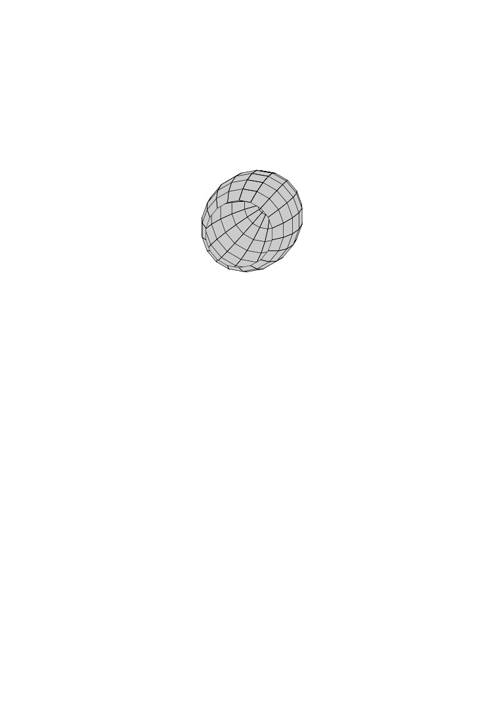

EVO Protocol
Version Draft
Volumetric Control Protocol+
Release Candidate
Draft
August 2020
IDSC-XX-YY-ZZ
Preface
EVO Protocol is a proposed value iterative protocol, or manifold. These are embedded functions
where the underlying asset(s) that are deposited are connected to the operational mechanisms
specified in the protocol, which act upon the system to optimize for price by adjust embedded
functions such as volumetric controls.
Our first reference implementation demonstrates the economic viability of such systems, exhibiting
the desirable properties as a unit of account for its underlying asset. We propose as a first iteration
GasEVO, a market for which Gwei, the computational unit of account for the Ethereum Blockchain,
is provided in that users may use to position themselves from higher transaction volumes of the
network at large. More generally, EVO Protocol can enable most any ERC-20 compliant
token the benefits of automated volumetric stabilization, with EVO protocol an upward trend
can be enforced deterministically, providing for greater ’natural’ liquidity to enter the market as
price-stability trends higher over time. Extending Applications Additional functionality can be
proposed, with specific applications in the commodities sector. Such an instrument with embedded
volumetric optionality can be used to secure financing through the underlying asset to create an
options market for freight movements in specified lanes. By financing the underlying assets (i.e.
the physical goods being moved) and agreeing upon certain contractual clauses we are able to
provide a BSE modeled pricing for these options.1
The rate of return on the riskless asset is constant and thus called the risk-free interest rate, it is
riskless to say as the contracts are secured by the freight itself. In order to optimize for market
liquidity, additional data is required to discern the optimal contract design and offering
1The Pricing of Forward Ship Value Agreements and the Unbiasedness of Implied Forward Prices in the Second-
Hand Market for Ships. Maritime Economics and Logistics (2004)
i
Contents
Nomenclature
v
1
Introduction
1
1.1
Abstract
1
1.1.1
Transaction Unwinding: Risk and Execution and Settlement
1
1.1.2
Trade Half Life
1
1.1.3
Optimal Execution of Portfolio Transactions
2
1.1.4
Front Running and Backrunning
2
1.1.5
Volumetric Contracting
2
1.1.6
Establishing Parameters for Transfer Rate
2
1.1.7
Contract Delivery and Contract Rollover Dates
2
1.1.8
A Fiction of Value
3
2
EVO Protocol
5
2.1
The Manifold System
5
2.2
Manifolds
5
2.2.1
Contract Operations
5
2.2.2
Token Mechanics
6
2.2.3
Price for Individual Account
7
2.2.4
Proportional Ratio for Discounted Interest Rate Growth
8
2.2.5
Calculate Individual Account Transference
8
2.2.6
The Total Daily Average Transfer Rate for all holders
8
2.2.7
Future Transfer Ratio
8
2.2.8
Ownership Ratio By an Account in a previous point of time
8
2.2.9
Discounted Interest Rate
8
2.2.10
Normalized Interest Rate
8
2.3
Protocol Context
9
2.3.1
Manifolds
9
2.3.2
Advantages over current protocols
9
2.4
Architecture
9
2.4.1
Requirements Overview
9
2.4.2
Protocol Specification
9
2.4.3
Base Ratio
10
2.4.4
Discounted Interest Rate
10
2.4.5
Address Information
10
2.4.6
Total average transfer rate for an address
10
2.4.7
Total average daily transfer rate for all holders
10
2.4.8
Calculations Example
10
2.5
Future Balance Ratio
11
2.5.1
Future transfer ratio
11
2.5.2
Ownership Ratio at a previous point in time
11
2.5.3
Calculated Interest Rate
11
iii
2.5.4
Discounted Interest Rate
11
2.5.5
Discounted Interest Rate
11
2.5.6
Ownership Ratio for Discounted Rate
11
3
Manifolds
13
3.1
Implementation Benchmark
13
3.1.1
Uniform Cost Search
13
3.1.2
Iterative Search Parameters
13
4
Volumetric Manifolds
14
4.0.1
Liquidity Point/Vertex
14
4.0.2
Ownership Ratio at a discrete point in block time
14
4.0.3
Liquidity Preference Path
14
4.0.4
Flash Loan led path-finding
15
4.0.5
Informative
15
5
Appendix
16
5.1
Reference Equations
16
5.1.1
Fees
16
5.1.2
Manifold Exchange
16
5.1.3
Manifold Interest Rate
16
5.2
Lists
16
Nomenclature
Symbols
EHC
Conditional equation
[−]
e
Willans coefficient
[−]
Indicies
h
Holder, a discrete account
St
Total Supply
Dt
Deposit at discrete block
Acronyms and Abbreviations
EVO
Embedded Volumetric Optionality
ETH
Ethereum
WETH
Wrapped Ethereum
v
Chapter 1
Introduction
EVO Protocol presents an idea of embedded volumetric optionality, which in essence is a mech-
anism for controllable liquidity through the mechanism of volume. Any asset would be "less"
accelerating in price swings depending on the chose parameters. One consequence is that signif-
icant volume movements, such as "rug pulls" or legitimate price action movements, incur a cost
onto the liquidating party. This, in essence, ensures orderly market liquidation to a degree with an
additional benefit of helping provide an orderly unwinding / unwinding period for instruments uti-
lizing the protocol. Instruments may produce predictable inflation rates, enabling them to be lent
out through other protocols, furthering market stabilizing effects. Such token can be a reasonable
investment choice purposed for the "storage of value".
1.1
Abstract
A Generalized Protocol Specification for Volumetric Manifolds and a reference implementation.
Features include an embedded volumetric mechanism to enforce desired behaviors based upon
robust economic incentives.1
Key Concepts: Automatic Stabilizers, embedded volumetric
optionality, liquidity, transaction unwinding,
transaction execution, price stability, self stability
1.1.1
Transaction Unwinding: Risk and Execution and Settlement
How does selling against an order book work? How do you measure risk of not being able to
liquidate your position? Any trader (esp. low volume low liquidity) can tell you how a tin order
book will make it impossible to profit on a trade. We can look at Almgren’s Optimal Execution
of Portfolio Transactions2 on their analysis of the situation:
1.1.2
Trade Half Life
This analysis yields a number we call the "half-life" of a trade, the natural time for execution in the
absence of exogenous time constraints. For example, in trading a highly illiquid, volatile security,
there are two extreme strategies: trade everything now at a known, but high cost, or trade in equal
1An analogy to help understand these terms is the ManifoldSystem. The ManifoldEpoch is equivalent to the
Epoch, the ManifoldVolume is equivalent to the transfer rate, and the ManifoldFee is the Fee for the Transfer
Rate.
2Almgren 1998, https://www.math.nyu.edu/faculty/chriss/optliqf .pdf
1
2
1.1. Abstract
sized packets over x time at a relatively lower cost. The latter strategy has lower expected cost
but this comes at the expense of greater uncertainty in total revenue.
1.1.3
Optimal Execution of Portfolio Transactions
1.1.4
Front Running and Backrunning
This can be expressed as the common "Gas Wars" events of network congestion on ethereum
foundation, or sending in a transaction knowingly under priced in the expectation it will be included
in a block in x amount of time from now. Basically discounting a future block inclusion as an
acceptable cost versus having it included relatively sooner (i.e. you would rather spend less get it
later than spend more and have it now).
Twaitdiscounted future block inclusion Twait discounted future block inclusion
T unwind
time to liquidate position
We can define this as what we call the time it takes to unwind a position (i.e. liquidation period)
All we can do is insist that for a given level uncertainty, cost be minimized.We can say that trade
execution is the "Dynamic trading strategy that provides the minimum expected cost of trading
over x period of time"3. As such we can say that the strategy employed for transaction pricing in
the first auction system can be that of expectations of future physical settlement (i.e. transaction
being included in the block) versus willingness to pay for that inclusion (i.e bidding expressed in
transaction fees).
1.1.5
Volumetric Contracting
A Volumetric futures contract would be buying a contract for a certain volume of goods, such as
freight space, gas (i.e. natural gas products), or blockspace. Block space as a tradable volumetric
futures contract could be achieved by creating a set of contracts in which gas token can either be
re-packaged, re-sold (auction), or burned and minted.
1.1.6
Establishing Parameters for Transfer Rate
Strategy
Parameter
Gas price Blocks waited
Geth
S = 1.0
4,414,902,746
1.97
Geth
S = 0.9
4,080,968,868
15.49
Geth
S = 0.8
3,531,922,197
25.52
Look-ahead
B = 15
1,166,965,099
4.80
Look-ahead
B = 30
969,559,938
8.52
Look-ahead
B = 60
782,105,012
18.84
Proposed approach
U = 1.0
2,120,108,703
3.28
Proposed approach
U = 0.9
1,908,097,833
3.79
Proposed approach
U = 0.8
1,696,086,963
5.13
Proposed approach
U = 0.7
1,484,076,092
10.06
1.1.7
Contract Delivery and Contract Rollover Dates
We can extrapolate the contract for date of delivery as being subsets of B and be able to ap-
proximate ideal delivery time for contracts. To the extent of future pricing concerns could express
3Almgren 1998
Chapter 1. Introduction
3
themselves beyond 30 days is likely unrealistic at this stage. This preliminary model is used in
deciding the parameters for the first market on evo protocol, gasevo, which is 24days In the
paper Blockchain Resource Pricing4 Buterin illustrates that how under, "full block conditions,
cryptocurrency price fluctuation is lower than transaction fee fluctuations". By denominating
things as "fixed fees" which utilize a unit of account denominated in cryptocurrency, it actually
leads to more (fiat-denominated) price predictability than a market with bidding and a gas limit.
In essence this is a "cap and trade" regime of monetary policy.
The regression finds that, after accounting for this social uncle rate, one byte accounts
for an additional
0.000002 uncle rate. Bytes in a transaction take up 68 gas, of which
61 gas accounts for its contribution to bandwidth (the remaining 7 is for bloating the
history database). If we want the bandwidth coefficient and the computation coefficient
in the gas table to both reflect propagation time, then this implies that if we wanted
to really optimize gas costs, we would need to increase the gas cost per byte by 50
(ie. to 138). This would also entail raising the base gas cost of a transaction by 5500
(note: such a re balance would not mean that everything gets more expensive; the gas
limit would be raised by
10would remain unchanged). Vitalik Buterin, ethermagican
forums.5
1.1.8
A Fiction of Value
’Fictitious Capital’ is the price of a non-produced resource like land. Since the owner-
ship of the land entails a stream of rent payments in the future, the capitalized value of
these prospective rent payments can generate a market price of the plot of land. The
common modern conception of the functions of money includes a store of value, unit
of account and a medium of exchange.
It is common to consider functions of money as a medium of exchange, store of value and
unit of account. In this work we highlight yet another function of money, namely as a
unit of contract execution. Historically, there has always been an implicit paper contract
behind money. However, with the rise of cryptocurrencies, we now have ’programmable
money’, where it is easy to bind digital assets to an explicit contract. We use the
term contractual money to refer to digital money with a usage contract in the form of
executable code.
An example of ’fictitious capital’ is the price of a non-produced resource like land. Since
ownership of the land entails a stream of rent payments in the future, the capitalized
value of these prospective rent payments can generate a market price of the plot of
land. For the owner of the plot of land, the price of the plot of land functions like
capital, generating a stream of profit-like
6
7
5One relatively simple way to implement this is that ½ of the tx fee goes to the miner who mined the tx, and
the other ½ goes into the "spread-out tx fee bucket". Each time a block is mined, 1
6The paradox for the labour theory of value that there are items in capitalism which command a price but have
no value, i.e., have zero embodied socially necessary abstract labour.
7Our forthcoming stack, Maidenlane, is a dematerialization protocol for contractual agreements, i.e a unit of
contract execution. The physicality of documentary trade is replaced by a new paradigm of electronic scarcity,
expressed normally through a distributed blockchain protocol.
Chapter 2
EVO Protocol
2.1
The Manifold System
There are two distinct concepts used throughout this paper:
• Manifolds
• evo
Manifolds compromise the mechanisms that enforce the protocol in such a way that it
enables composable extensions to be utilized.
2.2
Manifolds
EVO, short for embedded volumetric optionality represents a derived utility token
that is minted only when deposits are made into the corresponding manifold contract
for that underlying instrument.
EVO tokens are minted and burned on-demand by deposit and withdraw operations di-
rectly
on
the
contract.
EVO tokens do not imply the same epoch from asset to asset, nor should you
infer that the same properties that are found in GasEVO would be found in
another EVO-type token/instrument
2.2.1
Contract Operations
There are three primary operations that will affect the transfer rate
• Deposits
• Withdrawals
• Transfers
These three operations, deposit, withdraw and transfer, can all equally contribute to the
transfer rates that are tracked totally and individually per account. The business
logic is stored for a defined set of time. GasEVO implements a 25 day epoch. We
would like to reiterate that this parameter was tested through simulations and not
chosen arbitrarily.
5
6
2.2. Manifolds
2.2.2
Token Mechanics
The token price is determined dynamically and individually for each holder. This is
based on the information stored and/or updated in the smart contract during previous
transactions.
SHALL useevo to reference ONLY the minted asset created upon deposits.
• evo MUST ONLY reference minted assets created upon deposits at the defined
minting ratio (e.g. 1:1).
• ml MUST ONLY referenced the governance and utility interface contract that
administers the protocol as a whole
SHALL use manifold or ml to reference ONLY the protocol utility token.
Chapter 2. EVO Protocol
7
2.2.3
Price for Individual Account
All three operations such as deposit, withdraw and transfer can equally contribute to
the transfer rates that are tracked totally and individually (as per holder) by the smart
contract for the period of the last 25 days. The token price is determined dynamically
(and individually for each holder) based on the information stored or updated in the
smart contract during previous transactions:
√
Dt
Pt+1(h,a) :=
+I′
(2.1)
t+1(h,a)
St
The above equation will compute the price for a holder h to purchase certain amount
a of EVO tokens in exchange for a base deposit in the underlying instrument (ETH)
at the given discrete time-point t + 11, where Dt stands for the deposit of ETH in the
smart contract at previous time-point.
• Dt
St stands for the total supply of EVO tokens so far
Dt stands for deposits at a point in time
St = Total Supply So Far
I′
t+1(h,a)
(2.2)
1
(Equivalently a transaction number
8
2.2. Manifolds
2.2.4
Proportional Ratio for Discounted Interest Rate Growth
discounted interest and it can grow proportionally to a within a range of [0,0.24] of a
[0, 0.24]of a
(2.3)
2.2.5
Calculate Individual Account Transference
How much an individual account has transferred over the last 25 days
avg (Rt+1(h, a)) := avg (Rt(h)) + a
(2.4)
Total Avg. Transfer Rate for Individual Account
2.2.6
The Total Daily Average Transfer Rate for all hold-
ers
)
(Rt
avg
+1(h, a)
:= avg
( Rt(h)) + a
(2.5)
2.2.7
Future Transfer Ratio
avg (Rt+1(h, a))
τ =
(
)
(2.6)
Rt+1
avg
(h, a)
2.2.8
Ownership Ratio By an Account in a previous point
of time
Bt(h)
θ=
(2.7)
St
a × min(avg(β,τ),m)
It+1(h,a) :=
(2.8)
100
2.2.9
Discounted Interest Rate
(
)
I′
It+1(h,a),l′
−l′
(2.9)
t+1(h,a):=max
t+1(h,a)
t+1(h,a)
2.2.10
Normalized Interest Rate
√
l ∗ max(min(θ,l2),1)
l′
(2.10)
t+1(h,a):=a×
100
Chapter 2. EVO Protocol
9
2.3
Protocol Context
Manifolds and evo tokens represent the two distinct parameters at plat in the protocol.
Manifolds are the constructed routing and logic that is said to be embedded within,
with evo tokens the created asset representing a claim on the depository contract within
that specific manifold. This paper primarily deals with evo tokens: a forthcoming
paper detailing additional extensions such as adversarial exchange further extends the
manifold concept.
2.3.1
Manifolds
We define a Manifold as the potential difference between the underlying asset U a and
the forward contract of that asset F a. The manifold is a conduit in which fully collat-
eralize backing is unnecessary due to the design of the volumetric comptroller.2
2.3.2
Advantages over current protocols
Compound Finance for example illustrates the issue with illiquid assets.
Generally, large or liquid assets have high collateral factors, while small or
illiquid assets have low collateral factors. If an asset has a 0per-cent collateral
factor, it can’t be used as collateral (or seized in liquidation), though it can
still be borrowed.3
Utilizing a manifold for such non-liquid assets would enable the evo derived underlying
asset additional market access to such existing protocols. We should note that this does
not materially change the underlying market issues with the asset, only that their is now
programmatic guardrails to minimize potential contagion / knockdown affects arising
from usage of less liquid assets.
2.4
Architecture
An ERC20 smart contract will contain the information about the balance of every
address. Floating point math is provided by the excellent library ABDK libraries-
solidity4
See the DEVELOPMENT.md file in the GitHub.com repository.
2.4.1
Requirements Overview
An implementation of the EVO protocol and its manifold constructs.
2.4.2
Protocol Specification
The above equation will compute the price for a holder h to purchase a certain amount
of ‘EVO‘ tokens in exchange for a base deposit in ETH at point in time t + 1
Dt stands for the deposit of ETH in the smart contract at previous time - point stands
for the total supply of the minted asset EVO- tokens so far.
2
at
hash:
16d7e1dd8628dfa2f88d5dadab731df7ada70bdd
10
2.4. Architecture
2.4.3
Base Ratio
The first component with the token - base ratioDt/St under the square root is the
*indicative price* and does not depend on the purchase/transferred amount, a
2.4.4
Discounted Interest Rate
I′
(2.11)
t+1(h,a)
This component is called the *discounted interest rate* and it can grow *proportionally*
to a within a range of
[0, 0.24]a
(2.12)
. Higher interest payouts can slow down, decelerate, the price movement.
The Interest Rate 2.2.5 determines the speed, in essence the acceleration, such price
can change depending on the market demand and supply pressure for EVO-derived
tokens.
Interest is computed individually for each EVO holder.5
2.4.5
Address Information
Address Information
B(h)s.t.Bt + 1(h, a) := Bt(h) + a
(2.13)
In addition to the individual balances, EVO contract keeps track about how much each
holder has transferred in the last defined epoch6
2.4.6
Total average transfer rate for an address
avg(Rt + 1(h, a)) := avg(Rt(h)) + a
(2.14)
2.4.7
Total average daily transfer rate for all holders
avg(Rt + 1(h, a)) := avg(Rt(h)) + a
(2.15)
2.4.8
Calculations Example
More formally calculation of the individual interest rate as well as the applied ownership
discount can be described in following steps:
For: l := 4 , m := 26 are the ManifoldBottom and Manifold-Top transfer rate constants
and7
avg (Bt+1(h, a))
β=
,
(2.16)
St+1
5*Note* that all interest payments are contributed to the same common deposit Dt on the smart contract, which
is supporting the indicative price. This means that interest is shared by all holders that *choose not to trade their
tokens* at the moment.
6an epoch as defined in the GasEVO implementation as 25 days. Epochs may be customized and should generally
be in multiples of 6
7ManifoldBottom and ManifoldTop are defined parameters and can be changed
Chapter 2. EVO Protocol
11
2.5
Future Balance Ratio
For the future balance ratio, we resolve
avg (Bt+1(h, a))
β=
(2.17)
St+1
2.5.1
Future transfer ratio
avg (Rt+1(h, a))
τ =
(
)
(2.18)
Rt+1
avg
(h, a)
2.5.2
Ownership Ratio at a previous point in time
Bt(h)
θ=
(2.19)
St
2.5.3
Calculated Interest Rate
a × min(avg(β,τ),m)
It+1(h,a) :=
(2.20)
100
The calculated potential daily transfer rate is the ownership ratio at a *discrete point
in ‘block time‘. Then we resolve the interest rate
2.5.4
Discounted Interest Rate
√
l ∗ max(min(θ,l2),1)
l′
t+1(h,a):=a×
(2.21)
100
√
Dt
Pt+1(h,a) :=
+I′
t+1(h,a)
(2.22)
St
2.5.5
Discounted Interest Rate
√
Dt
Pt+1(h,a) :=
+I′
t+1(h,a)8
(2.23)
St
??
2.5.6
Ownership Ratio for Discounted Rate
We can then derive the ownership ratio for discount by
√
l ∗ max(min(θ,l2),1)
l′
(2.24)
t+1(h,a):=a×
100
whereas 1 per-cent‘ is the discount, thereby computing the discounted
interest as
(
)
I′
It+1(h,a),l′
−l′
(2.25)
t+1(h,a):=max
t+1(h,a)
t+1(h,a)
12
2.5. Future Balance Ratio
Price dynamics of equation (1) depends on the transactions volume conducted by all
of the involved market participants and bounded by O(sqrt(n)).
Therefore it can be expected that the demand for EVO Protocol based tokens like
GasEVO will be able to approximate future market sentiment for the value of the
underlying asset, whereas GasEVO may be seen as an approximation of the value of
storage as a function of the underlying asset, Ethereum.9
9
(i.e. gwei, or as a fixed unit of account for contracting
Chapter 3
Manifolds
The new capitalist axiomatic: a mirror of velocity.
3.1
Implementation Benchmark
3.1.1
Uniform Cost Search
Uniform cost search expands the node with the lowest cost-so-far
∑ iji
j cij onth∑ringe.
Hence, the relative ordering between two nodes is determined by the value of
i j cij
∑
for a given node. So only for dij = αcij , α > 0, can we conclude,
∑
∑
∑
ijin path (n) dij ≥
for some nodes n and m
ijin path (m) dij ⇐⇒ ijin path(n) cij ≥ ijin path(m) cij ,
3.1.2
Iterative Search Parameters
Cost of X + Y is decreased by n, n > 0, the edge is not on the optimal path, and was
not explored by the first search.
13
Chapter 4
Volumetric Manifolds
> A constructed mechanism for facilitation of efficient and effective contract[1] trading
G := (V, E, w)
weighted by the function w : E → R+ corresponding to the price of some trade e ∈ E
V,|V | ≤ |N|
Consider an abstract liquid trading (ALT) system as a weighted directed graph G :=
(V, E, w), where set of vertices V, |V | ≤ |N| contains digital representation of all trade-
able assets in G, set of edges E = {e ∈ V × V : w(e) > 0} represents all possible atomic
79 asymmetric80 trades, which are weighted by the function w : E → R+ corresponding
to the price of some trade e ∈ E
4.0.1
Liquidity Point/Vertex
Any liquid vertex v ∈ V has both deg−(v) ≥ 1 and deg+(v) ≥ 1
Liquidity Indifference Preference Paths2
∑
∑
∑
σst (v)
CB(v) :=
: ∀(s, t) ∈ S, where σst :=
s=t=v∈V σst
(s,t)∈S
e∈(s,t) w(e)
4.0.2
Ownership Ratio at a discrete point in block time
Bt(h)
θ=
(4.1)
St
Vertex v ∈ V represents half-liquid asset when either deg−(v) = 0 (source) or deg+(v) =
0(sink), where deg(−1+) : V → N is respectively a number of tail ends (indegree) and a
number of head ends (outdegree) from vertices adjacent to v.
4.0.3
Liquidity Preference Path
Let S ⊂ V × V contain all shortest paths from vertex s to vertex t : ∀s, t ∈ V
Also let vertex v ∈ V have the maximal82 betweenness centrality measure CB (v) :=
∑
∑
∑
σst (v)
: ∀(s, t) ∈ S, where σst :=
s=t=v∈V σst
(s,t)∈S
e∈(s,t) w(e)andσst(v)isasum
of only those shortest paths in S which contain v. We say that (s, t) ∈ S **is a path
with preferable liquidity if it ends with**
v ‘in essence,‘ t = v
14
Chapter 4. Volumetric Manifolds
15
So that we may compute the approximate list of *preferable assets*, we highlight two
distinct properties that are both necessary and sufficient.
In order to capture a desired hyper-manifold liquidity property of an always preferable
asset, G, , we identify such asset not only as a preferable "exit" (that is to say, the
position can be unwound within a reasonable amount of blocks without materially
affecting price of the asset) vertex, but also as the one that can be consequently traded
for any other liquid asset in G at the most best settlement price.
List
(manifold) (hyper-manifold) (supra-manifold) (inter-manifold)
Let S ⊂ V × V contain all shortest paths from vertex s to vertex t : ∀s, t ∈ V
Also let vertex v ∈ V have the maximal82 betweenness centrality measure CB (v) :=
∑
∑
∑
σst (v)
: ∀(s, t) ∈ S, where σst :=
s=t=v∈V σst
(s,t)∈S
e∈(s,t) w(e)
and σst(v) is a sum of only those shortest paths in S which contain v.
We say that (s, t) ∈ S is a path with **preferable liquidity** if it ends with v, i.e. t = v
In order to capture a desired liquidity preference curve ("hyper manifold") property
of an always preferable asset in an "ALT"-system G, we must first identify such asset.
Such an asset must exhibit the properties of not only having *genuine* liquidity (that is
to say, "a preferable "exit" (sink) vertex"), but also as the one that can be consequently
traded for any other liquid asset in G at the most attractive price.
4.0.4
Flash Loan led path-finding
A "liquid"[3] vertex v ∈ V (G′) of a complete liquid subgraph G′ ⊆ G is called a
*hyper*-liquid vertex when any preferable liquidity path
p = (s,v)
can be almost surely continued with an efficient trade for any other liquid u ∈ V (G′) , u =
∑
∑
∑
v in such a way that
e∈(s,u) w(e)≤ e∈(s,v) w(e)+ e∈(v,u) w(e)and(s,u)isashort-
est path.
4.0.5
Informative
[1] Contracts meaning *Smart Contracts*
[3] Pockets of Liquidity is a well known micro-structure in markets. Further research in
the micro structural differences between AMM’s and traditional settlement procedures
(e.g. LMM, FIFO, etc) must be pursued.
Chapter 5
Appendix
• Q3 2020
• Q4 2020
• Q1 2021
5.1
Reference Equations
sminted =xdeposited
·sstarting
xstarting
5.1.1
Fees
√k1
f1,2 = 1 −
√k2
5.1.2
Manifold Exchange
√
Dt
Pt+1(h,a) :=
+I′
(5.1)
t+1(h,a)
St
5.1.3
Manifold Interest Rate
(
)
I′
It+1(h,a),l′
−l′
(5.2)
t+1(h,a):=max
t+1(h,a)
t+1(h,a)
I′
(5.3)
t+1(h,a)∈[0,0.24]
The amount a as restricted by the constants and the formula construct defined as
??base primitive equation will reflect accurately.
5.2
Lists
Three types of list-environments are commonly used: itemize, enumerate, and description.
The following example uses itemize to create a list without numbering
• point one; and
• point two
16
Chapter 5. Appendix
17
created using
\begin{itemize}
\item point one; and
\item point two
\end{itemize}
The following example uses enumerate to create a list with numbering
1. point one; and
2. point two
created using
\begin{enumerate}
\item point one; and
\item point two
\end{enumerate}
Bibliography
[1]
[2]
Ghaleb, Asem and Pattabiraman, Karthik [How Effective Are Smart Contract Anal-
ysis Tools? Evaluating Smart Contract Static Analysis Tools Using Bug Injection],
Proceedings of the 29th ACM SIGSOFT International Symposium on Software
Testing and Analysis 2020
[3]
Hajdu, Akos and Jovanovi, Dejan solc-verify: A Modular Verifier for Solidity
Smart Contracts, 2020, booktitle = Verified Software. Theories, Tools, and Ex-
periments, series = Lecture Notes in Computer Science, volume = 12301, Springer,
Chakraborty, Supratik and Navas, Jorge A., 161-179, textISBN: 978-3-030-41600-
3, 10.1007/978-3-030-41600-311,
[4]
GFI Swaps Exchange LLC , GFI. 2015. GFI Swaps Exchange LLC rulebook. GFI
Technical Report. 2015, ,1,
[5]
Pavan, A I. Segal, and J. Toikka., Dynamic mechanism design: A Myerso-
nian approach., 2014,
82:601â53., Econometrica,
[6]
Protter. P. Stochastic integration and diï¬erentialequations.secondedition., 2005., publisher =
Heidelberg : Springer.,
[7]
Rostek., M.. and M., Weretka.
Price inference in small mar-
kets:
Dynamic thin markets.,
2012. 80:687â711. 2015., Econometrica ,
Review of Financial Studies 28:2946â92.,
[8]
@incollection
L.,
Understanding the impacts of dark pools on price dis-
covery,
2016,
The Chinese University of Hong Kong. Shenzhen.,
[9]
@incollection
"Peter DeMarzo", "A Liquidity Based Model of Security Design", 1999, publisher
=Econometrica, Volume 67: 65-99.,
2,
[10]
@incollection "Matthew O. Jackson", "Optimal Innovation of Futures Contracts",
1989, series = Review of Financial Studies, Volume 2: 275-296,
documents/ifdocs/ex-
hibitm1rulebookgfiswaps.pdf
19
Dynamic Systems and Control
Protocol
EVO Protocol
Specification type and date:
Version Draft, August 2020
Revision:
Draft
Freight Trust Clearing Corporation
1424 4th St Ste 214 PMB 1513
Santa Monica, CA 90401
254900C9UJMDGJ0ILK56